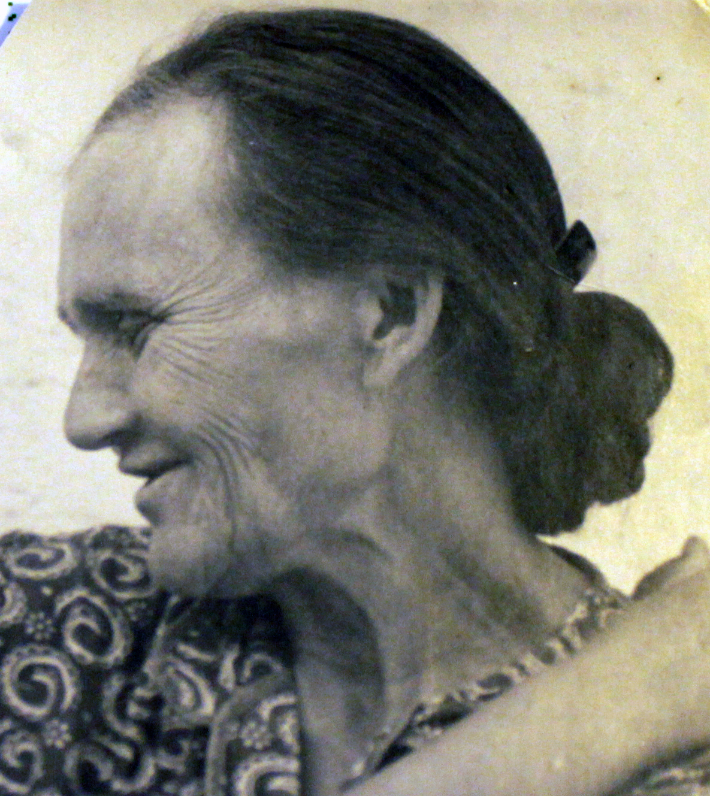
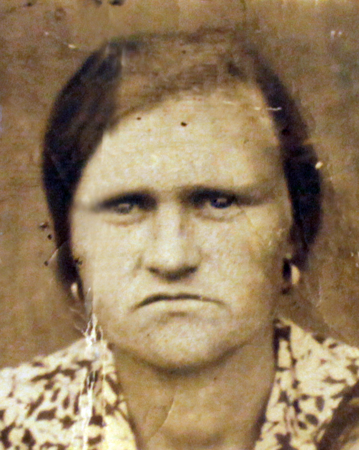
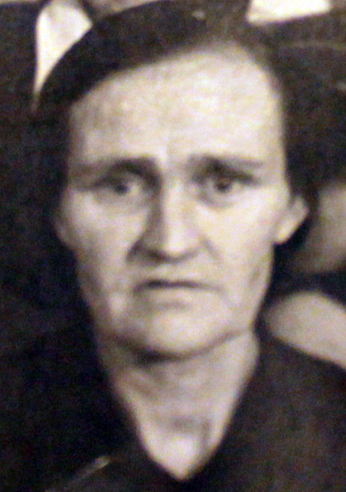

Продолжительность жизни: 75
Место жительства: г. Назарово
Отец: Герилович Федор Викентьевич (1887 - 1958)
Мать: Герилович Евдокия Афанасьевна (11.1894 - 11.1954)
Сестра: Кононенко (Герилович) Анна Федоровна (14.10.1913 - 03.11.2001)
Сестра: Притула (Герилович) Любовь Федоровна (15.04.1926 - 06.06.2014)
Брат: Герилович Леонид Федорович (01.01.1927 - 25.01.1995)
Брат: Герилович Николай Федорович
Сестра: Голощапова (Герилович) Александра Федоровна (1930)
Муж: Саулевич Василий Артемович (13.01.1911 - 13.01.1950)
Сын: Саулевич Иван Васильевич (29.01.1930 - 11.02.2013)
Дочь: Цепкова (Саулевич) Галина Васильевна (06.06.1936 - 25.04.2016)
Сын: Саулевич Юрий Васильевич (26.05.1938 - 02.12.1983)
Дочь: Васильева (Саулевич) Надежда Васильевна (24.04.1947)
Родилась: 18.12.1910. Отец: Герилович Федор Викентьевич. Мать: Герилович Евдокия Афанасьевна.
Вышла замуж. Муж: Саулевич Василий Артемович.
Родился сын: Саулевич Иван Васильевич, 29.01.1930. Отец: Саулевич Василий Артемович.
Родилась дочь: Цепкова (Саулевич) Галина Васильевна, 06.06.1936. Отец: Саулевич Василий Артемович.
Родился сын: Саулевич Юрий Васильевич, 26.05.1938. Отец: Саулевич Василий Артемович.
Родилась дочь: Васильева (Саулевич) Надежда Васильевна, 24.04.1947. Отец: Саулевич Василий Артемович.
Умерла: 24.12.1985, г. Назарово.
. . . |